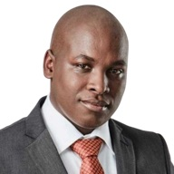

South Africa · Public broadcaster (SABC)

Samkele Maseko
Reporter, SABC News
Updated · 6 coalition pieces tracked
Who is Samkele Maseko?
Samkele Maseko (Reporter, SABC News) is one of the journalists and commentators Preamble’s Coalitions Tracker follows on the coalition talks after South Africa’s 4 November 2026 local government elections.
What has Samkele Maseko said about the coalition talks?
- Reported as the ANC, EFF, ActionSA and MK met to finalise their Gauteng coalition talks, and as the deadline for councils to sit drew near. Story: Joburg council meets to elect a mayor as reports say MK is out of the deal
- Previewed the ANC NEC meeting that was to give the party direction on how to approach coalition talks. Story: In public, Ramaphosa asks for good faith. In private, insiders say he wants the DA kept out of Joburg
- Reported from Waterfall in Johannesburg as the MK Party and the DA met for coalition talks and appeared to wrap them up. Story: MK talks to everyone, the DA included, but says it wants like-minded partners
- Spoke to ActionSA and MK representatives after the two parties met to discuss coalitions in municipalities across the country. Story: ActionSA bargains with both big parties, then leans towards the ANC
What is Samkele Maseko’s latest on the coalitions?
On 11 November 2026, SABC News: ANC NEC to provide direction on how to approach coalition talks. Maseko previewed the ANC NEC meeting due the next day, which was to give direction on how the party approaches coalition talks.
Every piece we track, newest first
SABC News · Video ANC NEC to provide direction on how to approach coalition talksMaseko previewed the ANC NEC meeting due the next day, which was to give direction on how the party approaches coalition talks.
SABC News · Video MK Party and DA meet for coalition talksReporting from Waterfall, near Midrand, where the ANC was meeting to decide how it would approach coalition negotiations with other parties.
SABC News · Video DA and MK Party conclude coalition talksMaseko reported live as the MK Party and the DA appeared to wrap up their coalition meeting at Waterfall in Johannesburg.
SABC News · Video Coalition deals continue in GautengThe ANC, EFF, ActionSA and MK Party met that morning to finalise their talks on forming coalitions in Gauteng; Maseko updated from the meeting.
SABC News · Video ANC, EFF, ActionSA and MKP meet to discuss working togetherMaseko spoke to ActionSA and MK Party representatives after the two parties met to discuss coalitions in municipalities across the country.
SABC News · Video Deadline approaches for constitution of councilsWith the deadline for councils to sit approaching, Maseko unpacked the latest negotiations; the ANC, seen as kingmaker, was expected to announce outcomes on Friday.
Preamble summarises published reporting and links to every original. Samkele Maseko does not write for Preamble, and this page is not endorsed by them.